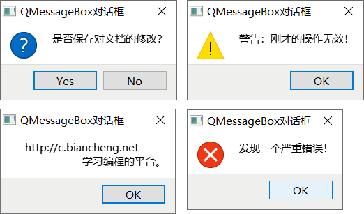
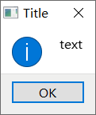
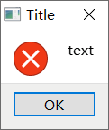
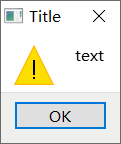
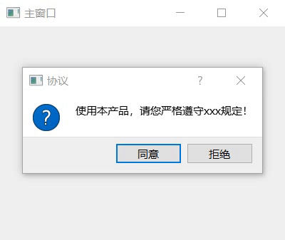

首页 > 编程笔记
Qt QMessageBox用法详解
QMessageBox 是 Qt 框架中常用的一个类，可以生成各式各样、各种用途的消息对话框，如图 1 所示。
很多 GUI 程序都会用到消息对话框，且很多场景中使用的消息对话框是类似的，唯一的区别只是提示信息不同。为了提高程序员的开发效率，避免重复地“造轮子”，Qt 开发者设计好了几种通用的 QMessageBox 消息对话框，需要时可以直接使用。
在项目中使用 information 消息对话框，直接调用 QMessageBox 类中的 information() 静态成员方法即可，该方法的语法格式如下：
information() 函数会返回用户按下的按钮。StandardButton 是 QMessageBox 类中定义的枚举类型，每个枚举值代表一种按钮。StandardButton 类型中的值有很多，下表给大家罗列了几个常用的：
例如，使用 information() 函数实现图 2 所示的对话框，实现代码为：
项目中使用 critical 消息对话框，直接调用 QMessageBox 类提供的 critical() 静态成员方法即可，该方法的语法格式为：
例如，使用 critical() 函数实现图 3 所示的对话框，实现代码为：

图 4 question消息对话框
项目中使用 question 对话框，可以直接调用 QMessageBox 类的 question() 静态成员方法，该方法的语法格式为：
例如，使用 question() 函数实现图 4 所示的对话框，实现代码为：
项目中使用 warning 对话框，可以直接调用 QMessageBox 类的 warning() 静态成员方法，该方法的语法格式为：
例如，使用 warning() 函数实现图 5 所示的对话框，实现代码为：

图 6 about消息对话框
注意，about 对话框没有固定的图标，它显示的图标可能来自父窗口、包含父窗口的顶层窗口等，也可能使用和 information 对话框相同的图标。
项目中使用 about 对话框，直接调用 QMessageBox 类提供的 about() 静态成员方法即可，该方法的语法格式如下：
aboutQt 可以看做是 about 对话框的一个具体实例，它只能显示 Qt 的介绍信息，如下图所示：

图 7 aboutQt对话框
项目中使用 aboutQt 对话框，直接调用 QMessageBox 类提供的 aboutQt() 静态成员方法即可，该函数的语法格式如下：
第二个构造函数中，各个参数的含义是：
举个简单的例子：
下表给大家罗列了常用的一些 QMessageBox 类成员方法：
举个简单的例子：

图 8 自定义的 QMessageBox 对话框
举个简单的例子：

图 1 QMessageBox消息对话框
图 1 QMessageBox消息对话框
很多 GUI 程序都会用到消息对话框，且很多场景中使用的消息对话框是类似的，唯一的区别只是提示信息不同。为了提高程序员的开发效率，避免重复地“造轮子”，Qt 开发者设计好了几种通用的 QMessageBox 消息对话框，需要时可以直接使用。
通用的QMessageBox消息框
Qt 提供了 6 种通用的 QMessageBox 消息对话框，通过调用 QMessageBox 类中的 6 个静态成员方法，可以直接在项目中使用它们。1) information消息对话框
information 对话框常用于给用户提示一些关键的信息，它的外观如下图所示：

图 2 information 消息对话框
图 2 information 消息对话框
在项目中使用 information 消息对话框，直接调用 QMessageBox 类中的 information() 静态成员方法即可，该方法的语法格式如下：
StandardButton QMessageBox::information(QWidget *parent,
const QString &title,
const QString &text,
StandardButtons buttons = Ok,
StandardButton defaultButton = NoButton)
各个参数的含义是：
- parent：指定消息对话框的父窗口，消息提示框会作为一个独立的窗口显示在父窗口的前面。消息提示框从弹出到关闭的整个过程中，用户无法操作父窗口，更不能删除父窗口；
- title：指定消息对话框的标题，即图 2 中的 Titile；
- text：指定消息对话框的具体内容，即图 2 中的 text；
-
buttons：指定消息对话框中包含的按钮。默认情况下，消息对话框只包含一个按钮，即图 2 中显示的 "OK" 按钮。根据需要，我们可以用
|按位或运算符在消息对话框中设置多个按钮，例如QMessageBox::Ok|QMessageBox::Cancel； - defaultButton：指定 Enter 回车键对应的按钮，用户按下回车键时就等同于按下此按钮。注意，defaultButton 参数的值必须是 buttons 中包含的按钮，当然也可以不手动指定，QMessageBox 会自动从 buttons 中选择合适的按钮作为 defaultButton 的值。
information() 函数会返回用户按下的按钮。StandardButton 是 QMessageBox 类中定义的枚举类型，每个枚举值代表一种按钮。StandardButton 类型中的值有很多，下表给大家罗列了几个常用的：
| 枚举值 | 含 义 |
|---|---|
| QMessageBox::Ok | 标有 "OK" 字样的按钮，通常用来表示用户接受或同意提示框中显示的信息。 |
| QMessageBox::Open | 标有 "Open" 字样的按钮。 |
| QMessageBox::Save | 标有 "Save" 字样的按钮。 |
| QMessageBox::Cancel | 标有 "Cancel" 字样的按钮。点击此按钮，通常表示用户拒绝接受提示框中显示的信息。 |
| QMessageBox::Close | 标有 "Close" 字样的按钮。 |
| QMessageBox::Discard | 标有 "Discard" 或者 "Don't Save" 字样的按钮，取决于运行平台。 |
| QMessageBox::Apply | 标有 "Apply" 字样的按钮。 |
| QMessageBox::Reset | 标有 "Reset" 字样的按钮。 |
| QMessageBox::Yes | 标有 "Yes" 字样的按钮。 |
| QMessageBox::No | 标有 "No" 字样的按钮。 |
例如，使用 information() 函数实现图 2 所示的对话框，实现代码为：
QMessageBox::StandardButton result = QMessageBox::information(&widget, "Title","text");其中，widget 是我们创建好的 QWidget 窗口，创建好的 information 对话框会显示在 widget 窗口的前面。通过用 result 接收 information() 函数的返回值，我们可以得知用户选择的是哪个按钮。
2) critical消息对话框
critical 消息对话框常用于给用户提示“操作错误”或“运行失败”的信息，它的外观如下图所示：

图 3 critical 消息对话框
图 3 critical 消息对话框
项目中使用 critical 消息对话框，直接调用 QMessageBox 类提供的 critical() 静态成员方法即可，该方法的语法格式为：
StandardButton QMessageBox::critical(QWidget *parent,
const QString &title,
const QString &text,
StandardButtons buttons = Ok,
StandardButton defaultButton = NoButton)
各个参数的含义以及返回值的含义，都与 information() 函数相同，这里不再重复赘述。例如，使用 critical() 函数实现图 3 所示的对话框，实现代码为：
QMessageBox::StandardButton result=QMessageBox::critical(&widget, "Title","text");其中，widget 是我们创建好的 QWidget 窗口，创建好的 critical 对话框会显示在 widget 窗口的前面。
3) question消息对话框
question 对话框常用于向用户提出问题并接收用户的答案，它的外观如下图所示：图 4 question消息对话框
项目中使用 question 对话框，可以直接调用 QMessageBox 类的 question() 静态成员方法，该方法的语法格式为：
StandardButton QMessageBox::question(QWidget *parent,
const QString &title,
const QString &text,
StandardButtons buttons = StandardButtons( Yes | No ),
StandardButton defaultButton = NoButton)
各个参数的含义以及返回值的含义，都与 information() 函数相同。例如，使用 question() 函数实现图 4 所示的对话框，实现代码为：
QMessageBox::StandardButton result=QMessageBox::question(&widget, "Title","text");其中，widget 是我们创建好的 QWidget 窗口，创建好的 question 对话框会显示在 widget 窗口的前面。
4) warning消息对话框
warining 对话框常用于向用户显示一些警告信息，它的外观如下图所示：

图 5 warning消息对话框
图 5 warning消息对话框
项目中使用 warning 对话框，可以直接调用 QMessageBox 类的 warning() 静态成员方法，该方法的语法格式为：
StandardButton QMessageBox::warning(QWidget *parent,
const QString &title,
const QString &text,
StandardButtons buttons = Ok,
StandardButton defaultButton = NoButton)
各个参数的含义以及返回值的含义，都与 information() 函数相同。例如，使用 warning() 函数实现图 5 所示的对话框，实现代码为：
QMessageBox::StandardButton result=QMessageBox::warning(&widget, "Title","text");其中，widget 是我们创建好的 QWidget 窗口，创建好的 warning 对话框会显示在 widget 窗口的前面。
5) about和aboutQt对话框
about 对话框常常作为介绍某个产品或某项功能的临时窗口，它的外观如下图所示：图 6 about消息对话框
注意，about 对话框没有固定的图标，它显示的图标可能来自父窗口、包含父窗口的顶层窗口等，也可能使用和 information 对话框相同的图标。
项目中使用 about 对话框，直接调用 QMessageBox 类提供的 about() 静态成员方法即可，该方法的语法格式如下：
void QMessageBox::about(QWidget *parent, const QString &title, const QString &text)
各个参数的含义和与 information() 函数相同。和前面的几种对话框不同，about对话框中只包含一个默认的 Ok 按钮，且 about() 函数没有返回值。aboutQt 可以看做是 about 对话框的一个具体实例，它只能显示 Qt 的介绍信息，如下图所示：
图 7 aboutQt对话框
项目中使用 aboutQt 对话框，直接调用 QMessageBox 类提供的 aboutQt() 静态成员方法即可，该函数的语法格式如下：
void QMessageBox::aboutQt(QWidget *parent, const QString &title = QString())
我们只能设置 aboutQt 对话框的 parent 父窗口和 title 标题，不能自定义它的内容。所以在实际场景中，aboutQt() 对话框很少使用。自定义QMessageBox对话框
以上 6 种通用的 QMessageBox 对话框，界面上的图片无法修改，按钮上的文字也无法修改（例如无法将 OK、No 改成中文）。如果想修改它们，就需要自定义一个 QMessageBox 对话框。QMessageBox对话框的创建
程序中创建 QMessageBox 对象，必须先引入<QMessageBox>头文件。QMessageBox 类提供了两个构造函数，分别是：
QMessageBox::QMessageBox(QWidget *parent = Q_NULLPTR)
QMessageBox::QMessageBox(Icon icon,
const QString &title,
const QString &text,
StandardButtons buttons = NoButton,
QWidget *parent = Q_NULLPTR,
Qt::WindowFlags f = Qt::Dialog | Qt::MSWindowsFixedSizeDialogHint)
第一个构造函数可以创建一个“空白”对话框，即对话框中不包含任何文本和按钮。当然，通过调用 QMessageBox 类提供的成员方法，可以向“空白”对话框中添加各种元素（图标、文本、按钮等）。第二个构造函数中，各个参数的含义是：
- icon：指定对话框中的图片。Icon 是 QMessageBox 类中定义的枚举类型，内部包含 QMessageBox::NoIcon、QMessageBox::Question、QMessageBox::Information、QMessageBox::Warning、QMessageBox::Critical 几个值，分别表示：不指定图片、question对话框的图片（图 4）、information对话框的图片（图 2）、warning对话框的图片（图 5）、critical对话框的图片（图 3）。
- title：指定对话框的标题；
- text：指定对话框中显示的文本信息；
- buttons：指定对话框中包含的的按钮，可选值如表 1 所示。
- parent：指定对话框的父窗口；
- f：指定对话框的属性。WindowFlags 是 Qt 提供的枚举类型，内部包含的值有很多，有的用来指定对话框的用途（比如 Qt::Dialog 表示对话框窗口），有的用来指定对话框的外观（比如 MSWindowsFixedSizeDialogHint 表示给对话框添加一个细的边框）
举个简单的例子：
#include <QApplication>
#include <QMessageBox>
int main(int argc, char *argv[])
{
QApplication a(argc, argv);
//创建 QMessageBox 类对象
QMessageBox MyBox(QMessageBox::Question,"Title","text",QMessageBox::Yes|QMessageBox::No);
//使 MyBox 对话框显示
MyBox.exec();
return a.exec();
}
程序中创建了一个 MyBox 对话框，通过调用 QMessageBox 提供的 exec() 方法，可以使 MyBox 对话框弹出。运行程序可以发现，MyBox 对话框的外观和图 4 的 question 对话框完全一样。
QMessageBox对话框的使用
QMessageBox 类提供了很多功能实用的成员方法，方便我们快速地制作出实际场景需要的对话框。下表给大家罗列了常用的一些 QMessageBox 类成员方法：
| 成员方法 | 功 能 |
|---|---|
| void QMessageBox::setWindowTitle(const QString &title) | 设置对话框的标题。 |
| void setText(const QString &text) | 设置对话框中要显示的文本。 |
| void setIconPixmap(const QPixmap &pixmap) | 设置对话框中使用的图片。 |
| QAbstractButton *QMessageBox::clickedButton() const | 返回用户点击的按钮。 |
| QPushButton *QMessageBox::addButton(const QString &text, ButtonRole role) | 向对话框中添加按钮，text 为按钮的文本，role 是 QMessageBox::ButtonRole 枚举类型的变量，用于描述按钮扮演的角色，它的可选值有 QMessageBox::AcceptRole（同 OK 按钮）、QMessageBox::RejectRole（同 Cancel 按钮）等。 |
| int QMessageBox::exec() | 使当前对话框弹出，除非用户关闭对话框，否则对话框将一直存在。此外，当对话框中使用的都是 Qt 提供的按钮时，该方法可以监听用户点击的是哪个按钮，并将该按钮对应的枚举值返回；如果对话框中包含自定义按钮，需要借助 clickedButton() 方法确定用户点击的按钮。 |
举个简单的例子：
#include <QApplication>
#include <QMessageBox>
#include <QPushButton>
#include <QDebug>
int main(int argc, char *argv[])
{
QApplication a(argc, argv);
QMessageBox MBox;
MBox.setWindowTitle("QMessageBox自定义对话框");
MBox.setText("这是一个自定义的对话框");
MBox.setIconPixmap(QPixmap("C:\\Users\\xiexuewu\\Desktop\\icon_c.png"));
QPushButton *agreeBut = MBox.addButton("同意", QMessageBox::AcceptRole);
MBox.exec();
if (MBox.clickedButton() == (QAbstractButton*)agreeBut) {
//在 Qt Creator 的输出窗口中输出指定字符串
qDebug() << "用户点击了同意按钮";
}
return a.exec();
}
程序运行结果如图 8 所示，点击“同意”按钮后，我们会在 Qt Creator 的输出窗口中看到“用户点击了同意按钮”。图 8 自定义的 QMessageBox 对话框
QMessageBox的信号和槽
操作 QMessageBox 对话框，最常用的信号函数是 buttonClicked() 函数，最常用的槽函数是 exec() 函数，它们的语法格式和功能如下表所示。| 信号函数 | 功 能 |
|---|---|
| void QMessageBox::buttonClicked(QAbstractButton *button) | 当用户点击对话框中的某个按钮时，会触发此信号函数，该函数会将用户点击的按钮作为参数传递给槽函数。 |
| 槽函数 | 功 能 |
| int QMessageBox::exec() | 弹出对话框，直到用户手动关闭对话框，此对话框将一直存在。 |
举个简单的例子：
//main.cpp
#include <QApplication>
#include <QWidget>
#include <QMessageBox>
#include <QPushButton>
#include <QAbstractButton>
QPushButton* agreeBut;
QPushButton* disagreeBut;
class MyWidget:public QWidget{
Q_OBJECT
public slots:
void buttonClicked(QAbstractButton * butClicked);
};
void MyWidget::buttonClicked(QAbstractButton * butClicked){
if(butClicked == (QAbstractButton*)disagreeBut){
this->close();
}
}
int main(int argc, char *argv[])
{
QApplication a(argc, argv);
//创建主窗口
MyWidget myWidget;
myWidget.setWindowTitle("主窗口");
myWidget.resize(400,300);
//创建消息框
QMessageBox MyBox(QMessageBox::Question,"","");
MyBox.setParent(&myWidget);
//设置消息框的属性为对话框，它会是一个独立的窗口
MyBox.setWindowFlags(Qt::Dialog);
MyBox.setWindowTitle("协议");
MyBox.setText("使用本产品，请您严格遵守xxx规定！");
//自定义两个按钮
agreeBut = MyBox.addButton("同意", QMessageBox::AcceptRole);
disagreeBut = MyBox.addButton("拒绝", QMessageBox::RejectRole);
myWidget.show();
//添加信号和槽，监听用户点击的按钮，如果用户拒绝，则主窗口随之关闭。
QObject::connect(&MyBox,&QMessageBox::buttonClicked,&myWidget,&MyWidget::buttonClicked);
MyBox.exec();
return a.exec();
}
//MyWidget类的定义应该放到 .h 文件中，本例中将其写到 main.cpp 中，程序最后需要添加 #include "当前源文件名.moc" 语句，否则无法通过编译。
#include "main.moc"
程序执行结果为：

关注公众号「站长严长生」，在手机上阅读所有教程，随时随地都能学习。内含一款搜索神器，免费下载全网书籍和视频。

微信扫码关注公众号